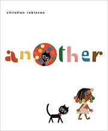
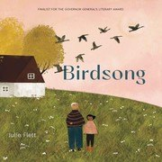
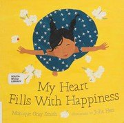
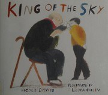

Illustrators
Explore how picturebook creators use words, images and book design across their work.
Ad: This website uses affiliate links to Bookshop.org UK and Amazon UK. I may earn a commission on qualifying purchases. As an Amazon Associate I earn from qualifying purchases. Affiliate Disclosure.
35 reading-list entries
For edition-checked book options, see Educational Resources.
For more recommendations, explore BookTrust’s Bookfinder.
Illustrator studies
Quentin Blake
Compare the movement of Blake’s line in a wordless story with what it conveys in an illustrated account of grief.
Quentin Blake bibliography or profile

Clown
Quentin Blake (author-illustrator)
- Cover pending
The Green Ship
Quentin Blake (author-illustrator)
- Cover pending
Mrs Armitage on Wheels
Quentin Blake (author-illustrator)
 Cover pending
Cover pending
Stanislav Marijanović
Croatian illustrator, author and artist. His illustrated monster books use the conventions of encyclopedias and field guides for comic effect.
- Cover pending
Enciklopedija čudovišta
Stanislav Marijanović
2008 · Sipar · Zagreb
Invented monsters are presented as entries in a reference work.
Edition and cover details - Cover pending
Kućna čudovišta: ilustrirani priručnik
Stanislav Marijanović
1997 · Sipar · Zagreb
An illustrated handbook that imagines a hidden population of domestic monsters.
Edition and cover details - Cover pending
Enciklopedija čovjeka – pisana rukom čudovišta
Stanislav Marijanović
2009 · Sipar · Zagreb
An encyclopedia that imagines humans as the subject of a monster’s observations.
Edition and cover details
Sydney Smith
Compare how cropping, light and colour make places feel different when seen from a child’s point of view.
Sydney Smith bibliography or profile
- Cover pending
Small in the City
Sydney Smith (author-illustrator)
- Cover pending
Town Is by the Sea
Joanne Schwartz (author) · Sydney Smith (illustrator)

I Talk Like a River
Jordan Scott (author) · Sydney Smith (illustrator)
- Cover pending
My Baba’s Garden
Jordan Scott (author) · Sydney Smith (illustrator)
- Cover pending
Do You Remember?
Sydney Smith (author-illustrator)
Christian Robinson
Compare how bold shapes, colour and shifts in viewpoint invite readers into ordinary scenes and imagined spaces.
Christian Robinson bibliography or profile

Another
Christian Robinson (author-illustrator)

You Matter
Christian Robinson (author-illustrator)
Last Stop on Market Street
Matt de la Peña (author) · Christian Robinson (illustrator)
- Cover pending
School’s First Day of School
Adam Rex (author) · Christian Robinson (illustrator)
Julie Flett
Look at how season, colour and space establish relationships between people, animals and place.
Julie Flett bibliography or profile

Birdsong
Julie Flett (author-illustrator)

We All Play
Julie Flett (author-illustrator)

My Heart Fills with Happiness
Monique Gray Smith (author) · Julie Flett (illustrator)

Still This Love Goes On
Buffy Sainte-Marie (author) · Julie Flett (illustrator)
Yu Rong
Look at how paper-cut shapes, texture and line convey movement and sensation. Compare a school scene in Shu Lin’s Grandpa with a dance sequence in The Visible Sounds.
Yu Rong bibliography or profile
 Cover pending
Cover pending- Cover pending
- Cover pending
The Boy Who Loves to Lick the Wind
Fiona Carswell (author) · Yu Rong (illustrator)
- Cover pending
Ming the Panda
Jake Hope (author) · Yu Rong (illustrator)

Baek Heena
Compare how photographed sets, handmade figures and lighting give familiar places a sense of wonder.
Baek Heena bibliography or profile
- Cover pending

Moon Pops
Baek Heena (author-illustrator)
- Cover pending
Cloud Bread
Baek Heena (author-illustrator)
- Cover pending
I Am a Dog
Baek Heena (author-illustrator)
Laura Carlin
Look at how Carlin changes scale and uses empty space to shape a reader’s sense of place.
Laura Carlin bibliography or profile

Cover pending- Cover pending
The Promise
Nicola Davies (author) · Laura Carlin (illustrator)
- Cover pending
The Iron Man
Ted Hughes (author) · Laura Carlin (illustrator)
- Cover pending
A World of Your Own
Laura Carlin (author-illustrator)
Selected covers from publishers. Additional edition covers supplied by Open Library where available.
Carol Thompson
Author and illustrator whose board books and picturebooks depict everyday play, movement and family life.

Mommy, Mama, and Me
Lesléa Newman · Carol Thompson
2009 · Tricycle Press · ISBN 9781582462639
A toddler spends the day with two mums in a rhyming board book.

Daddy, Papa, and Me
Lesléa Newman · Carol Thompson
2009 · Tricycle Press · ISBN 9781582462622
Rhythmic words and images follow a toddler and two dads through everyday play and care.

Whatever the Weather: Rain
Carol Thompson
2014 · Child’s Play · ISBN 9781846436833
A board book about the sensations and movement of playing out in the rain.